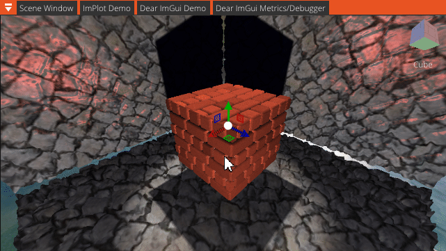

<!DOCTYPE html>
<html lang="en">

<head>
  <meta charset="utf-8">
  <meta content="width=device-width, initial-scale=1.0" name="viewport">

  <title>Kyle Robinson - Advanced Graphics 2</title>
  <meta content="" name="description">
  <meta content="" name="keywords">

  <!-- Favicons -->
  <link href="../assets/img/person.ico" rel="icon">

  <!-- Google Fonts -->
  <link href="https://fonts.googleapis.com/css?family=Open+Sans:300,300i,400,400i,700,700i|Poppins:300,400,500,700" rel="stylesheet">

  <!-- Vendor CSS Files -->
  <link href="../assets/vendor/bootstrap/css/bootstrap.min.css" rel="stylesheet">
  <link href="../assets/vendor/font-awesome/css/font-awesome.min.css" rel="stylesheet">
  <link href="../assets/vendor/boxicons/css/boxicons.min.css" rel="stylesheet">
  <link href="../assets/vendor/owl.carousel/assets/owl.carousel.min.css" rel="stylesheet">
  <link href="../assets/vendor/venobox/venobox.css" rel="stylesheet">
  <link href="../assets/vendor/aos/aos.css" rel="stylesheet">
  <script src="https://kit.fontawesome.com/f585aa18f8.js" crossorigin="anonymous"></script>

  <!-- Template Main CSS File -->
  <link href="../assets/css/style.css" rel="stylesheet">

</head>

<body>

  <!-- ======= Header ======= -->
  <header id="header">
    <div class="container">
      <nav id="nav-menu-container">
        <ul class="nav-menu">
          <li><a href="../#landing">Home</a></li>
          <li><a href="../#about">About Me</a></li>
          <li class="menu-active2"><a href="#main">Portfolio</a></li>
          <li><a href="../#social">Social</a></li>
          <!-- <li><a href="../#contact-form">Contact</a></li> -->
          <li><a href="../assets/Kyle Robinson CV.pdf" target="_blank">C.V.</a></li>
        </ul>
      </nav><!-- #nav-menu-container -->
    </div>
  </header><!-- End Header -->

  <main id="main">

    <!-- ======= Breadcrumbs Section ======= -->
    <section class="breadcrumbs">
      <div class="container">
      </div>
    </section>
    <!-- Breadcrumbs Section -->

    <!-- ======= Portfolio Details Section ======= -->
    <section class="portfolio-details">
      <div class="container">

        <div class="portfolio-details-container">

          <div class="owl-carousel portfolio-details-carousel">
            
            
            
          </div>

          <div class="portfolio-info">
            <h3>Project Information</h3>
            <ul>
              <li><strong>Language</strong>: C++</li>
              <li><strong>Graphics API</strong>: DirectX 11</li>
              <li><strong>Creation</strong>: Y3 S2</li>
              <li><strong>Source URL</strong>: <a href="https://github.com/kyle-robinson/directx-advanced-graphics">GitHub Page</a></li>
            </ul>
          </div>

        </div> <br/>

        <div class="portfolio-description">
          <h2>Advanced Graphics <i>2</i></h2>
            <p>
              This project was created as part of my <strong>Advanced Graphics and Real-Time Rendering</strong> module in semester 2 of my third year. The task was to create a framework using the DirectX graphics API, which would demonstrate a range of even more advanced graphical techniques, like terrain rendering with appropriate real-time triangle subdivision to achieve LODS, as well as voxel rendering, and model animations. There was also a optional task to create a bezier curve system to allow for the creation of splines with the option for modifying their control points at runtime.
            </p>
          <h2 style="font-size:20px">What Did I Learn?</h2>
            <p>
              While developing the terrain system, I learned a lot about the different types of terrain rendering techniques, such as diamond square, fault formations, and Perlin noise to achieve the desired midpoint displacement. I also learned about the different types of LOD techniques, and how proper triangle subdivision is achieved through the use of hull and domain shaders, with the control point and patch constant phases respectively.

              <br><br>
              
              The purpose of the control point phase in the hull shader is to set up the control points for the patch constant phase in the domain shader, which is where the actual subdivision takes place. The domain shader is also where the tessellation factor is set, which is used to determine the number of subdivisions that will take place. The tessellation factor is determined by the distance between the camera and the centre of the patch, which is then used to determine the number of subdivisions that will take place. After this, the patch constant phase sets the edge and inside tessellation factors for each patch, where a higher tessellation factor results is more triangle subdivision.

              <br><br>

              I then learned about the purpose of the domain shader and that it returns a position for each vertex by first providing barycentric coordinates for each vertex, which are then used to interpolate the position of the vertex. It also returns the normal for each vertex, which is then used to calculate the lighting, and texture coordinates, which are then used to sample the texture for the vertex which are provided as UV coordinates. The purpose of the barycentric coordinates is to act as weights for each vertex so that they are positioned correctly within the patch. These vertex positions are then passed to the vertex shader, where they are projected to clip space, and then rasterized to the screen.

              <pre class="prettyprint">
// Domain shader - tessellate terrain using barycentric coordinates
[domain( "quad" )]
DOMAIN_OUT DS( PatchTess patchTess, float2 uv : SV_DomainLocation, const OutputPatch<HULL_OUT, 4> quad )
{
    DOMAIN_OUT output;

    // Bilinear interpolation
    output.PosW = lerp(
		lerp( quad[0].PosW, quad[1].PosW, uv.x ),
		lerp( quad[2].PosW, quad[3].PosW, uv.x ), uv.y );

    output.Tex = lerp(
		lerp( quad[0].Tex, quad[1].Tex, uv.x ),
		lerp( quad[2].Tex, quad[3].Tex, uv.x ), uv.y );

    // Tile layer textures over terrain
    output.TiledTex = output.Tex * 50.0f;

    // Displacement mapping
    output.PosW.y = texHeightMap.SampleLevel( smpHeightMap, output.Tex, 0 ).r;

    // Project to homogeneous clip space
    output.PosH = mul( float4( output.PosW, 1.0f ), World );
    output.PosH = mul( output.PosH, View );
    output.PosH = mul( output.PosH, Projection );

    return output;
}</pre>

              I also spent time implementing various ImGui extensions like ImGuizmo, and ImGuiFileDialog. ImGuizmo is a gizmo system that allows for the manipulation of objects in the scene, and ImGuiFileDialog is a file dialog system that allows for the selection of files and directories. I learned how both of these systems worked and implemented them into the application. ImGuizmo was used to spawn gizmos at the positions of entities in the scene to allow for simple translation, rotation, and scaling. The extension also provides the options of creating a view cube which modifies the view matrix of the main camera to target the position of the active gizmo in the scene.

              <br/><br/>
              
              The ImGuiFileDialog extension proved very useful for allowing the user to change the diffuse, normal, and height map textures for the objects in the scene including the saving terrain data back to the appropriate JSON files.

              <br/><br/><pre class="prettyprint">
// ImGuizmo - spawn gizmo at the position of the selected entity
// Decompose/recompose matrix
float* worldPtr = (float*)&worldMat;
float matrixTranslation[3], matrixRotation[3], matrixScale[3];
ImGuizmo::DecomposeMatrixToComponents( worldPtr, matrixTranslation, matrixRotation, matrixScale );
ImGuizmo::RecomposeMatrixFromComponents( matrixTranslation, matrixRotation, matrixScale, worldPtr );

// Handle manipulation of the gizmo
XMFLOAT4X4 view = pCamera->GetView();
float* viewPtr = (float*)&view;
XMFLOAT4X4 projection = pCamera->GetProjection();
float* projectionPtr = (float*)&projection;

if ( ImGuizmo::Manipulate( viewPtr, projectionPtr, imguizmoData.CurrentGizmoOperation, imguizmoData.CurrentGizmoMode, worldPtr, NULL, imguizmoData.UseSnap ? &imguizmoData.SnapAmount.x : NULL ) )
{
    // Update object parameters
    XMFLOAT3 pos = XMFLOAT3( matrixTranslation[0], matrixTranslation[1], matrixTranslation[2] );
    pTransform->SetPosition( pos );

    XMFLOAT3 rot = XMFLOAT3( matrixRotation[0], matrixRotation[1], matrixRotation[2] );
    pTransform->SetRotation( rot );

    XMFLOAT3 scale = XMFLOAT3( matrixScale[0], matrixScale[1], matrixScale[2] );
    pTransform->SetScale( scale );
}</pre>

              Along with this, I learned about the various skeletal animations and the different types of interpolation techniques, such as linear, cosine, and cubic, and how they are used to interpolate between keyframes to achieve smooth animations. I also learned about the different types of skeletal animation techniques, such as forward kinematics, inverse kinematics, and dual quaternion skinning, and how they are used to animate the bones of a skeleton. Further, I learned about the different types of skeletal animation blending techniques, such as additive, and how they are used to blend between different animations to achieve more complex animations.

              <br/><br/>

              <table class="table-container">
                <tr>
                  <td>
                    
                  </td>
                  <td>
                    
                  </td>
                </tr>
                <tr>
                  <td>
                    <center><p>Model Animation</p></center>
                  </td>
                  <td>
                    <center><p>Terrain Generation</p></center>
                  </td>
                </tr>
              </table>
              <br>
              <table class="table-container">
                <tr>
                  <td>
                    
                  </td>
                  <td>
                    
                  </td>
                </tr>
                <tr>
                  <td>
                    <center><p>ImGuizmo Manipulator</p></center>
                  </td>
                  <td>
                    <center><p>Voxel Terrain</p></center>
                  </td>
                </tr>
              </table>
            </p>
          <h2 style="font-size:20px">Future Additions</h2>
            <p>
              In the future, I would like to add more features to the application, such as the ability to create new skeletal animations, and the ability to create new terrain patches. Along with this, I would like to add the ability to have the player walk along the terrain, which would be an example of <strong>inverse kinematics</strong>, and have the camera follow from a fixed distance behind the player, and then perhaps add the ability to jump and have the camera continue to follow.
	      
	      <br/><br/>
		    
	      I would like to spend more time on making the terrain procedural rather than generating large grids of fixed sizes and needing to seed new values along with rebuilding the terrain to add new patches. Other than this, I think it would be interesting to work on a shrub and tree system that would allow for the creation of trees and shrubs that would be placed on the terrain and would sway in the wind.
            </p>
            <br/><h2 style="font-size:20px">Feel free to drop a comment below.</h2>
            <div id="disqus_thread"></div><br/>
            <script>

            /**
            *  RECOMMENDED CONFIGURATION VARIABLES: EDIT AND UNCOMMENT THE SECTION BELOW TO INSERT DYNAMIC VALUES FROM YOUR PLATFORM OR CMS.
            *  LEARN WHY DEFINING THESE VARIABLES IS IMPORTANT: https://disqus.com/admin/universalcode/#configuration-variables*/

            var disqus_config = function () {
              this.page.url = 'https://kyle-robinson.co.uk/html/advanced-graphics-2';  // Replace PAGE_URL with your page's canonical URL variable
              this.page.identifier = 1; // Replace PAGE_IDENTIFIER with your page's unique identifier variable
            };

            (function() { // DON'T EDIT BELOW THIS LINE
              var d = document, s = d.createElement('script');
              s.src = 'https://https-kyle-robinson-co-uk.disqus.com/embed.js';
              s.setAttribute('data-timestamp', +new Date());
              (d.head || d.body).appendChild(s);
            })();
            </script>
            <noscript>Please enable JavaScript to view the <a href="https://disqus.com/?ref_noscript">comments powered by Disqus.</a></noscript>
            <script id="dsq-count-scr" src="//https-kyle-robinson-co-uk.disqus.com/count.js" async></script>

        </div>
      </div>
    </section><!-- End Portfolio Details Section -->

  </main><!-- End #main -->

  <!-- ======= Contact Section ======= -->
  <section id="contact">
    <div class="social-links" style="margin-top:-55px;">
      <a href="https://github.com/kyle-robinson" class="github" target="_blank"><i class="fa fa-github"></i></a> &nbsp;
      <a href="https://www.linkedin.com/in/kylerobinsongames/" class="linkedin" target="_blank"><i class="fa fa-linkedin"></i></a> &nbsp;
      <a href="https://www.hackerrank.com/kylerobinson456?hr_r=1" class="hackerrank" target="_blank"><i class="fab fa-hackerrank"></i></a> &nbsp;
      <a href="https://twitter.com/KyleRobinson42" class="twitter" target="_blank">
                <svg xmlns="http://www.w3.org/2000/svg" width="16" height="16" fill="currentColor" class="bi bi-twitter-x" viewBox="0 0 16 16">
                  <path d="M12.6.75h2.454l-5.36 6.142L16 15.25h-4.937l-3.867-5.07-4.425 5.07H.316l5.733-6.57L0 .75h5.063l3.495 4.633L12.601.75Zm-.86 13.028h1.36L4.323 2.145H2.865z"/>
                </svg>
              </a> &nbsp;
      <a href="https://www.youtube.com/@kylerobinsongames" class="youtube" target="_blank"><i class="fa fa-youtube"></i></a> &nbsp;
    </div>
  </section><!-- End Contact Section -->

  <!-- ======= Footer ======= -->
  <footer id="footer">
    <div class="credits">
        &copy; KYLE <span style="color:#ff9d00">ROBINSON</span> | PORTFOLIO
    </div>
  </footer><!-- End Footer -->

  <a href="#" class="back-to-top"><i class="fa fa-chevron-up"></i></a>

  <!-- Vendor JS Files -->
  <script src="https://cdn.jsdelivr.net/gh/google/code-prettify@master/loader/run_prettify.js"></script>
  <script src="../assets/vendor/jquery/jquery.min.js"></script>
  <script src="../assets/vendor/bootstrap/js/bootstrap.bundle.min.js"></script>
  <script src="../assets/vendor/jquery.easing/jquery.easing.min.js"></script>
  <script src="../assets/vendor/php-email-form/validate.js"></script>
  <script src="../assets/vendor/counterup/counterup.min.js"></script>
  <script src="../assets/vendor/waypoints/jquery.waypoints.min.js"></script>
  <script src="../assets/vendor/isotope-layout/isotope.pkgd.min.js"></script>
  <script src="../assets/vendor/superfish/superfish.min.js"></script>
  <script src="../assets/vendor/hoverIntent/hoverIntent.js"></script>
  <script src="../assets/vendor/owl.carousel/owl.carousel.min.js"></script>
  <script src="../assets/vendor/venobox/venobox.min.js"></script>
  <script src="../assets/vendor/aos/aos.js"></script>

  <!-- Template Main JS File -->
  <script src="../assets/js/main.js"></script>

</body>

</html>
